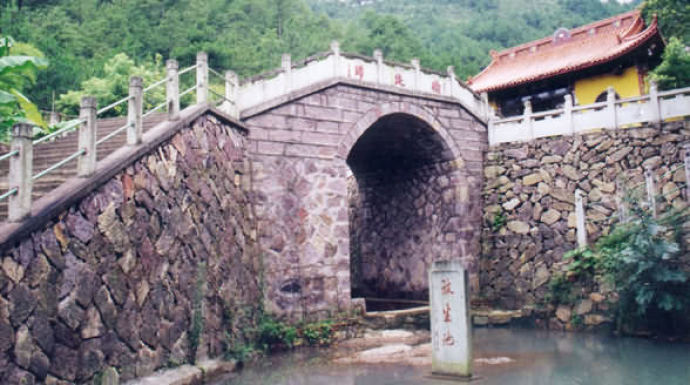
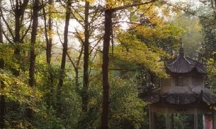
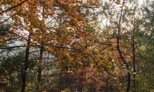

社姆山



社姆山位于浙江省东阳市江北街道境内。坐落于东诸公路边的会稽山余脉天鹅峰下，距东阳市区10公里，总面积为10.9平方公里。经过数年开发，今已初具规模。该区以“东城社姆双并肩，景色奇秀赛方岩，禅寺右幽源渊深，人文史话灿若星”而闻名遐迩。景区以雄奇的狮子山和白象山对峙扼守为门户；清澈的盘溪水为腰带；山势蟠龙伏虎，重峦叠嶂，林海吟涛声，花树吐芬芳。其主体建筑寺院殿宇飞檐翘角，泛金流丹，庄严肃穆。海拔720余米的天鹅峰如翡翠屏耸立于寺院之后。源于天鹅峰的社姆坑水斗蛇行如银练，穿云破雾飘飘悠悠而下，蜿蜒向东注入斤丝龙潭中，再流入盘溪。境内岩石千姿百态，或似群狮偃卧，或似大象奔走，或似天鹅振翼，或似情侣相依。山间松树迎风，谷旁藤蔓摇曳，游人目及之物，皆独具风姿和神韵。